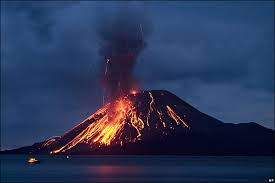

localizado en el centro de México, en los límites territoriales de los estados de Morelos, Puebla y México. Se localiza a unos 72 km al sureste de la Ciudad de México, 43 km de Puebla, 63 km de Cuernavaca, y 53 km de Tlaxcala.
El cráter del Popocatépetl es elíptico, de 850 m de eje mayor y de 750 m de eje menor, con una profundidad de 250 a 300 m. En el fondo de su cráter existen varias fumarolas que sirven de respiradero al volcán, capas de rocas traquíticas muy compactas, basaltos, escorias porosas cargadas de óxido de hierro, abundantes depósitos de azufre y de ácido sulfhídrico. En el interior del cráter, que es de paredes verticales. tienen lugar constantes derrumbes, y esta lleno de rampas y de lomas.
1.- No humedecer la ceniza a fin de evitar taponamientos en el sistema de alcantarillado
2.- No realices actividades al aire libre y si es posible no salgas.
3.- Cierra puertas y ventanas y coloca toallas o trapos húmedos en las rendijas.
4.-Si tienes que salir cúbrete con un pañuelo o tapabocas, limpia ojos y garganta con agua pura.Para los ojos, usa lentes protectores, especialmente si usas lentes de contacto. Ten a la mano una linterna y pilas.
5.-Cubre tinacos, cisternas y depósitos de agua.
6.-Barre y retira la ceniza de techos, azoteas, patios y calles, deposítalas en bolsas y no permitas que se vaya al drenaje.
7.-Si permaneces expuesto por algún tiempo a las cenizas volcánicas, al ingresar a tu casa se recomienda cambiar de ropa.
1.- Proceda inmediatamente a la evacuación para evitar los escombros volantes, gases calientes, explosiones laterales y corrientes de lava.
2.- Elabora una ruta de evacuación y ten el depósito de gasolina del coche siempre lleno.
3.- Evacua siguiendo las recomendaciones de las autoridades para no encontrarte lava y barro, así como rocas y escombros que puede arrojar el volcán.
5.-Mantén almacenada agua potable y alimentos no perecederos para disponer de ellos en el momento de una eventual evacuación.
6.-Mantén un maletín de primeros auxilios, un radio de pilas, una linterna en buen estado y pilas o baterías de reserva.
7.-Cierra las llaves de agua y gas, desconecta la luz y asegúrate de cerrar bien puertas y ventanas
8.-Si fuiste evacuado y te encuentras en un albergue, mantén la calma, recibirás alimentos, atención médica, etc. Además, podrás participar en las labores de mantenimiento del mismo.

Ubicado en los límites de los estados de Colima y Jalisco, en México. El volcán de Colima o volcán de Fuego se eleva entre 3870 y 3940 msnm, y su altura se encuentra en un constante cambio gracias a la constante actividad que ha presentado durante los últimos años
Su altura es de 42601 msnm y no presenta actividad volcánica. Su cima presenta signos de grave erosión glaciar lo que ha dificultado determinar algunos aspectos de su violenta historia. Hoy en día es posible encontrar materiales piroclásticos del nevado a más de 80 km de distancia del cráter ocasionadas por una erupción de magnitudes catastróficas acompañada de avalanchas y lahares voluminosos que se cree no fue anterior al pleistoceno.
Algunas dependencias que lo monitorean son:
1.- UNAM (Universidad Nacional Autónoma de México)
2.- CENAPRED ( Centro Nacional de Prevención de Desastres )